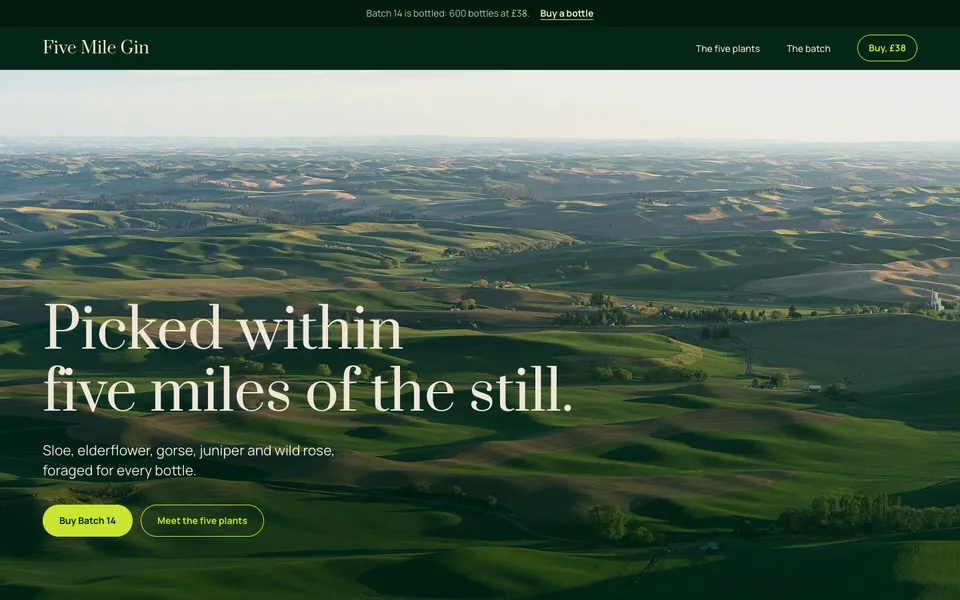
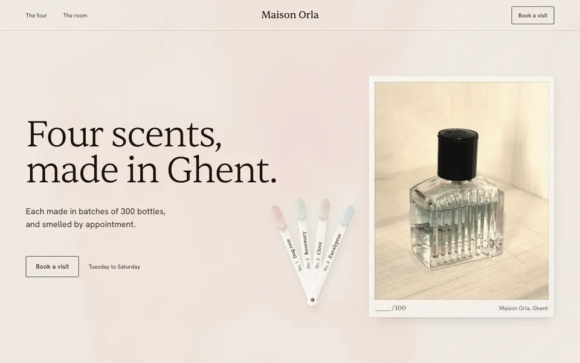
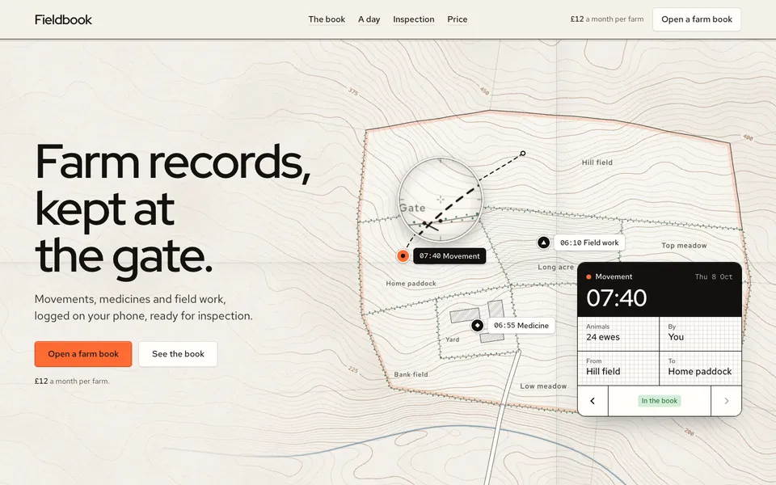

Desain yang terasa dibuat, bukan dihasilkan.
Lima puluh tema, aturan lantai yang tegas, dan pemeriksaan di browser nyata.
Edisi 2.0.0. Disusun dari isi repositori Hallmark.

- Kertas
- Slate 84%, rona 245
- Huruf
- Hanken Grotesk 600, Newsreader 400
- Sinyal
- Magenta 45%, rona 350
Katalog 50 bahan
Satu tema adalah satu material. Isi halaman ditentukan oleh pekerjaannya.
Almanac
Cool slate stock, blue-black ink, Hanken Grotesk over Newsreader, one chart magenta.
- Genre
- Editorial
- Huruf tampilan
- Hanken Grotesk
- Kertas
- Mid, 84%, rona 245
- Sinyal
- chromatic-magenta, rona 350
Aturan yang tidak ditawar
Empat dari enam belas aturan lantai.
-
Warna lewat token
Setiap warna dan huruf dideklarasikan di root, tidak ditulis langsung.
-
Fokus muncul seketika
Kendali punya keadaan fokus, aktif dan nonaktif. Cincin fokus tanpa transisi.
-
Tanpa label kecil
Tidak ada eyebrow atau kapital berjarak. Keterangan memakai wajah teks.
-
Gerak punya jalan mundur
Isi terbaca tanpa skrip. Transisi punya pengganti saat gerak dikurangi.
Dari kalimat ke halaman
Empat langkah yang tercatat di README repositori.
| No | Tahap | Keluaran |
|---|---|---|
| 01 | Pre-flight | Bahan nyata dibaca sekali. |
| 02 | Deal | Tiga tema ditawarkan, satu dipilih. |
| 03 | Build | Hero dibangun dan diulas dulu. |
| 04 | Sweep | Linter berjalan, lalu ulasan segar. |
Satu baris untuk memasangnya.
npx skills add nutlope/hallmark -g
Tiga halaman jadi
Gambar contoh dari repositori.


